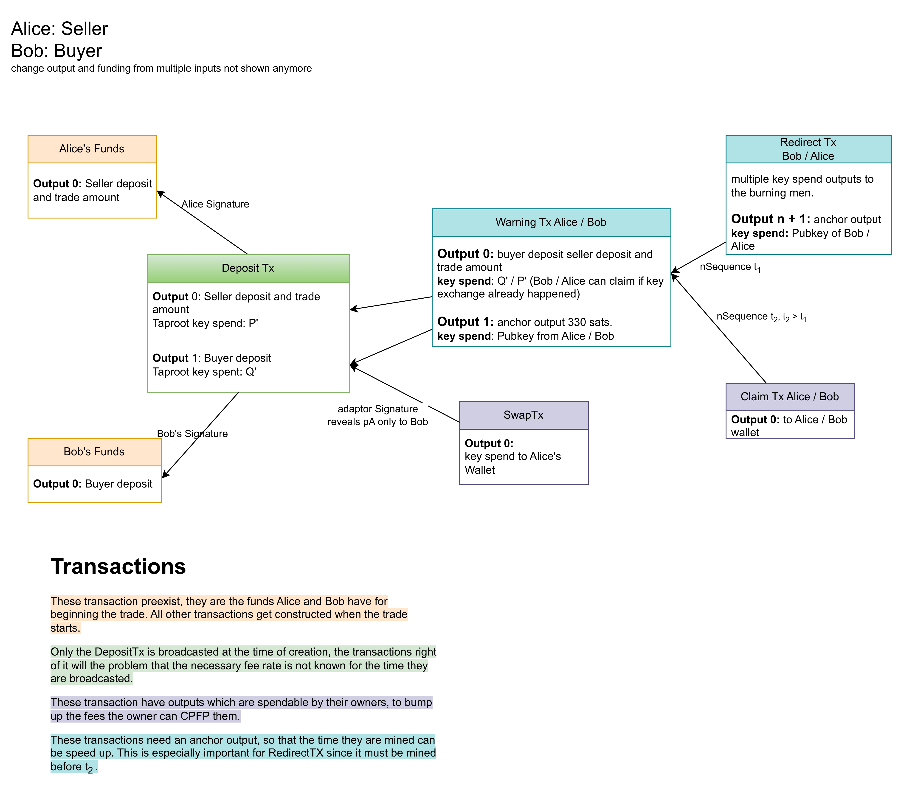

Currently, Bisq uses 4 transaction to make a normal trade. This causes a lot of fees, which in higher fee environment will get increasingly a problem. Also, these 4 transactions reveal the bitcoin script used for the multisig. This is a limitation for privacy. The goal of this protocol is to reduce fees and have more privacy using Taproot.
To keep this article short, I am omitting the problem of paying fees, as it can be added to the system quite easily afterward and doesn't have much of an impact. There are different approaches to paying fees, obviously the easiest would be to just have another output in the transaction which pays the fees like it is done in the current model. But this approach results in many small UTXOs. The discussion of fees is being moved to elsewhere.
Alice and Bob deposit their amounts into a 2of2 multisig. Alice and Bob create random private keys, which are in no way connected to other private keys. Note: In HD Wallets, which is the current standard, private keys are being derived from each other using a chaincode. So the sequence of private keys is deterministic.
For the alternative paths of this protocol, Alice and Bob need to prepare some pre-signed transactions. To do the signing process Alice and Bob use MuSig2 as Protocol.
A Schnorr based 2of2 multisignature, makes use of the additivity of the keys and their signatures. Instead of a script, we have a public key, which is a (weighted) sum of Alice and Bobs pub keys. The aggregated key locks the taproot transaction output in a key spend path.
The details of the MuSig2 protocol (and adaptive signatures) are here described in length.
The 2 public key from Alice and Bob can be combined to a aggregated public key.
and the same for the corresponding private key
with the linearity of elliptic curves
this effectively means, that when Alice passes her private key to Bob, he can calculate the private key for
So the Single transaction of the Bisq trade will have all outputs secured by a pay to public key hash and the transfer of ownership will be conducted by passing the private key from one person to the other. Note that the SingleTx will have 2 outputs constructed like this, one output will be owned by the person which gets only the deposit back (the seller) and the other output will be owned by the buyer, which gets the trade amount and the deposit.
Once the transaction is confirmed on the blockchain, the out-of-bands payment can begin. This is usually the fiat payment. Once the fiat payment is received, the Seller of BTC (Alice) will confirm the payment. Alice sends her secret key
Bob now has both secret keys and can compute

The happy path was constructed with privacy in mind. One taproot transaction with script-less multisigs. The transaction has 2 inputs and 4 outputs, which is not very typical, but also not uncommon. However, it doesn't have a script based spending condition, only normal key-spends. That still gives it a good privacy, as taproot transaction are very common nowadays.
If privacy would not be an issue, then the transaction for the happy path could be constructed differently. In that case, it could be made with segwit v0 as well. Instead of the scriptless multisig we could have a script
multisig. And instead of passing the private key to transfer the ownership of the scritless multisig, Bob could send a signature for his Public Key in the MultiSig.
This Signature would need to have SIGHASH_NONE || SIGHASH_ALLCANPAY. With this sighash type the signature will only verify against the own input,
no output and no other inputs will be part of the message to check. Practically is this like a blank check for the other side,
it enables Alice to create any transaction, she just needs to sign her pub key in the multisig with her key. Alice must sign her pub key with SIGHASH_ALL. At least one Signature in a transaction
needs to have SIGHASH_ALL, otherwise the transaction could be changed by anybody seeing the transaction in the mempool,
before its mined.
In the section 'Happy Path' I described only one part of the UTXO swap, basically the exchange of private keys. However, the seller deposits the trade amount and a deposit, the buyer deposits only a deposit as escrow. After the deal, the buyer should have control over a deposit and the buyer shall have sole control over the funds and a deposit, assuming the deposit from both parties have the same amount. This means they need to exchange control for the respective utxos at the same time in an atomic way. If the seller sends the private key to the buyer, but the buyer stays inactive, then the seller will not get access to a deposit. The deposit for him cannot be moved by anyone, because he still has one of two keys, but he cant move it either. How do Alice and Bob exchange their private keys for the UTXOs in an atomic way?
Before exchanging the private key for SwapTx) for Alice (the Seller) in a way that when Alice uses the SwapTx, then she reveals information to Bob such that he can spend Output 0 of the
DepositTx, which is locked by SwapTx such that it sends the buyer
(his) deposit to Alice Wallet. Bobs prepares the signature for SwapTx such that Alice must reveal a secret to Bob to use that signature. Technically, this is done through adaptive signatures. The secret Alice must pass to Bob for using the signature is
Details can be found in the write-up of how adaptor
signatures work with MuSig2. In sum this is a secret atomic UTXO swap. After preparing the SwapTx, Alice can send Bob the secret key SwapTx to use.
So Alice and Bob are able to exchange the keys without using a transaction, the SwapTx only serves as fallback if Bob doesn't follow the protocol.
The transfer of ownership in this protocol is basically swapping control of UTXOs, by exchanging private keys for the multisigs.
However, sometimes one party is uncooperative or doesn't respond at all. For these cases we are preparing with pre-signed transactions. The first one is the Warning transaction. There is one transaction for Alice and one for Bob. They are very similar, but not the same.
Here is how the WarningTx Alice would look like. It's called WarningTx Alice, because Alice can post it.
Alice won't be able to post WarningTx Bob. The inputs will be the two outputs of the SingleTx from above, which include the trade amount and both deposits.
Output 0:
WarningTx Alice, then Bob is able to immediately transfer the output 0 to his wallet by using the secret key for Output 1: An anchor output with key spend from a public key of Alice Wallet. Since we are constructing the
WarningTx Alice beforehand, we won't know which is a reasonable fee rate at the time the transaction is broadcast.
So Alice can construct a CPFP transaction to pay for additional fees.
Above we saw the happy path, if everybody behaves as expected. Having those steps setup and explained,
gives us now the possibility to analyse what can possibly go wrong. Since swapping the UTXOs happens after initialization, all transactions seen in the diagram above are already setup and pre-signed. Even SwapTx is already signed, which gives Alice the possibility of using it prematurely. If she uses it before the fiat payment actually happened,
she can get Bob's deposit. But with exposing the signature for SwapTx she enables Bob to get the trade amount and Alice deposit, which of course is a bad bargain.
Only the Seller (Alice) has a SwapTx. Now what can happen while the UTXO swap:
WarningTx Alice and will get her money back (see below how exactly) or use the SwapTx to get her money directly (if the fiat transaction was successful).
WarningTx Bob.WarningTX Alice at this point, because Bob has already WarningTx Alice.
SwapTxto get her deposit.WarningTx Bob before Alice SwapTx, then Alice can still broadcast RedirectTx Alice, because Bob does not have the secret key for WarningTx Alice.
After the DepositTx has been broadcast, it may happen for different reason, that the protocol does not move along the happy path described above. It could be that one party is inactive or fiat payment didn't happen or any reason oe of the traders is not satisfied. In that case ech trader has the possibility to post a WarningTx.
The WarningTx has both outputs of the DepositTx
as input, that means if any of the trader has spent his trade outcome already (and therefore the UTXO swap already happened), then the WarningTx cannot be used anymore. As the name says the WarningTx does warn the other party about what's ahead. One of three case can happen.
WarningTx Alice has a key spend WarningTx in case the happy path completed
already.
RedirectTx BobClaimTx AliceThe RedirectTx Bob has a time delay OP_CSV script, because Alice enforces the time delay by not signing the RediretTx Bob if it doesn't have nSequence set to RedirectTx Bob Bob can send the funds to the
burning men of the Bisq DAO. With this option he can have an arbitrator look on the problems and reimburse the traders based on the case. The RedirectTx Bob will have many outputs, distributing the money to all burning men of the DAO.
Additionally, it has an anchor output with a pubkey of Bob, so he can CPFP the transaction to pay for higher mining fees.
The ClaimTx Alice has an even higher time delay RedirectTx Bob, which means that he is inactive.
So for the case of inactive traders, the DAO doesn't need to provide arbitration and the other trader can claim both deposits and the trade amount.
After the trade is successfully executed, Alice and Bob have their funds locked in P' and Q' respectively. They can send that at any time with any transaction they construct.
However, the WarningTx can still be posted. This is unfortunate and not very comforting that someone, after the fact, can still post a valid transaction. Misuse of
the WarningTx after the trade is over is not wise because if the other player detects it, then he can make a transaction to take all the money. So the offender will
lose at least the deposit.
To make normal use of the transferred funds, they should appear in the wallet. However, this may not work with each wallet. And may even need some custom wallet feature for handling this. Effectively that could mean that only the build-in wallet may handle this protocol.
This protocol would provide a lot of on-chain privacy for bisq trades. The usability would increase, since the transfer of ownership is instant and does not need a transaction to be mined. The fees would considerably decrease. This is at least for the happy path.